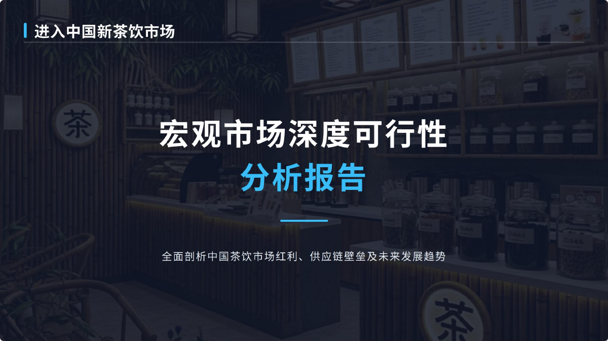
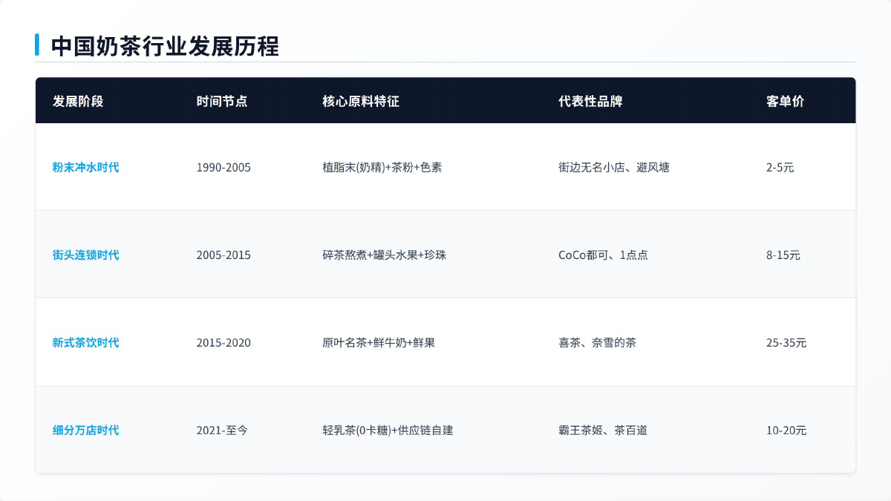
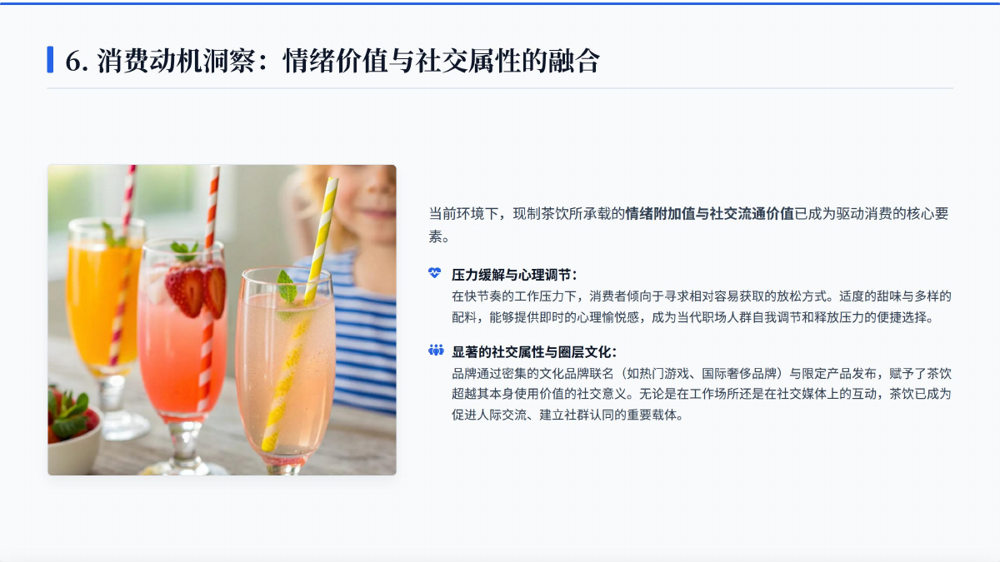
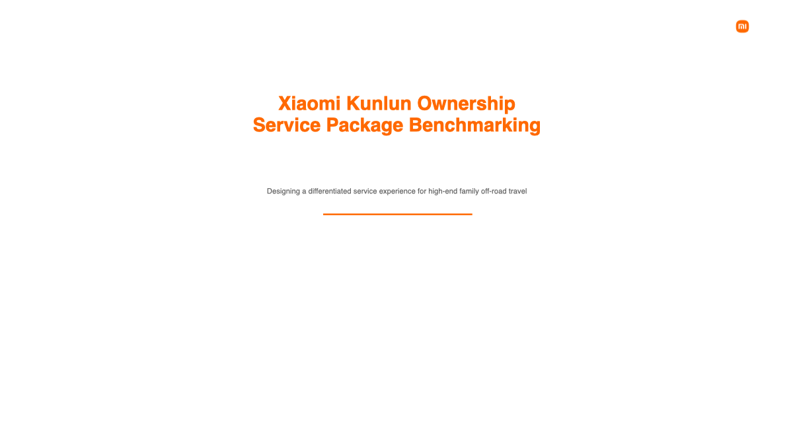

I · Personal Profile
由梓健
Zijian You
嗨！我是 Zijian You。我正在英国 Warwick WMG 攻读 Programme and Project Management，这里放的是我能展开讲清楚的项目、实习材料和简历。
14.1亿
PwC 项目宏观市场入口：全国人口与现制饮品潜在市场
30-50万
单店盈利模型测算资本支出区间
100+
光大银行实习期累计服务客户
65%
客户投诉沟通流程优化后满意度提升
II · Work Wall
把经历整理成一份作品索引。
这里放的是我能具体展开的经历和材料：市场进入报告、服务包方案、金融实习、银行客户工作、教育和简历。

普华永道战略咨询 中国奶茶市场进入报告
报告页面 市场、消费者与竞争分析
报告页面 财务测算与进入策略
小米汽车售后部线上实习 Kunlun 车主服务包方案 中信证券 / 光大银行
金融实习与客户工作
中信证券 / 光大银行
金融实习与客户工作
中信证券
行业日报、周报、深度研究报告、上市公司三张财务报表、调研纪要和电话会议纪要。
- 行业趋势与投资逻辑提炼
- Excel 建模与可视化
- 证券行业财税政策研究

客户经理实习生
从客户资产结构和风险偏好出发，匹配理财、基金等产品；参与贷前资料收集、风险初审、客户关系维护和营销活动执行。
100+ 客户服务
新增存款 20 万
满意度提升 65%
华威大学 + 谢菲尔德大学
MSc Programme and Project Management；BSc Accounting, Finance and Management。
学联外事部部长 / 红十字会内联部成员
跨部门协作、公益活动、校方与总领馆沟通、校友网络建设。
中英文简历
这里放了中文和英文简历 PDF，也保留了一份中文 Word 版本，方便查看完整经历。
III · Selected Cases
两段可以展开看的项目。
01
普华永道 · 战略管理咨询 · 2026.01-2026.04
中国新式茶饮市场进入可行性分析
这份报告从宏观市场、消费者场景、竞争品牌和单店模型四个角度展开，最后形成中国新式茶饮市场进入建议。
研究框架
从 14.1 亿人口、人均可支配收入超 4 万元、社零与餐饮增长，延伸到城市层级、消费者趋势、品牌竞争和单店模型。
商业分析
构建“产品 · 消费场景 · 竞争品牌”三层模型，使用波特五力识别供应链深度与数字化运营两大关键壁垒。
进入方案
预设自建、联营、加盟、并购四种模式，设计 A / B / C 三套准入方案，并对标奈雪的茶、蜜雪冰城、古茗等品牌。
财务判断
搭建单店盈利模型，测算资本支出 30-50 万元、原料 35-40%、租金和人力各 15-20%、投资回收期 12-18 个月。
02
小米汽车售后部线上实习 · Kunlun 服务包
为高端家庭越野旅行设计售后服务体验
这份方案从家庭长途旅行者的使用场景出发，梳理故障、事故、路线、儿童座椅、行李和服务追踪等售后触点。
用户画像
核心场景为周末、假期、露营和半远程路线。用户需要实时状态、人工安抚、专业接送、数字交车和少交接环节。
标杆研究
对比 Land Rover、Ford F-150 Raptor、Lincoln Navigator，分别提炼冒险救援、硬派使用和豪华家庭服务逻辑。
服务架构
提出 Essential Care、Travel Assurance、Premium Concierge 三层模块，区分基础保养、旅行保障和高触达管家服务。
签名服务
远程救援协助、家庭旅行保护热线、事故管家、长途出行前检查、实时服务追踪、专属 Kunlun 顾问。
Selected Internship Artifacts
精选实习作品入口
这里保留两份可以直接打开的材料：普华永道中国奶茶市场进入报告和小米 Kunlun 服务包方案。下面的 5 个飞书链接是小米实习期间整理的过程材料。
IV · Finance Experience
证券研究和银行实习让我补上了金融业务的现场感。
把行业信息整理成投资判断材料。
- 分析行业与上市公司数据，支持撰写日 / 周报和深度研究报告。
- 拆解上市公司三大财务报表，用 Excel 完成数据建模与可视化。
- 整理调研与电话会议纪要，提炼核心信息并形成结构化分析。
- 研究证券行业财税政策，理解税收对企业财务运作的影响。
从客户沟通、产品匹配到流程合规。
- 分析客户资产结构和风险偏好，匹配理财、基金等产品。
- 累计服务客户 100 余人，推动客户资金转化，实现新增存款 20 万元。
- 参与贷前资料收集、风险初审和流程跟进，支持业务合规开展。
- 处理客户投诉并优化沟通流程，推动客户满意度提升 65%。
V · Education & Leadership
教育经历和校园组织工作。
华威大学 · MSc Programme and Project Management
项目规划管理与控制、组织人员与绩效、项目财务管理、变革管理、多项目与项目群环境管理。
谢菲尔德大学 · BSc Accounting, Finance and Management
管理会计、财务会计、公司分析与管理、应用会计与财务管理、会计与咨询案例研究；2021 年谢菲尔德大学奖学金。
谢菲尔德中国学联 · 外事部部长
统筹公益与慈善活动，作为学生、校方和中国驻曼彻斯特总领馆之间的沟通桥梁，推动校友会创建与校友网络建设。
红十字会 · 内联部成员
统筹部门活动计划，参与救护员资格考核流程设计与现场监考，策划艾滋病预防与反歧视主题活动。
VI · Skills
我常用的分析方法、工具和语言。
商业与战略
- 市场进入可行性分析
- 竞品对标与进入模式设计
- 消费者趋势与城市分层研究
- 波特五力与商业壁垒判断
财务与数据
- 三大财务报表分析
- 单店盈利模型与回本周期测算
- Excel 数据透视表、VLOOKUP、宏
- 数据建模与可视化表达
金融与客户
- 投资研究材料整理
- 客户资产结构与风险偏好分析
- 贷前资料收集与风险初审
- 客户投诉沟通与流程优化
工具与语言
- 中文母语，英语可作为工作语言
- Kingdee、Yonyou、SAP
- Word、PowerPoint、Excel
- 结构化汇报与中英文材料转换
VII · Resume & Contact
简历和联系方式。
手机：18846839735；邮箱：shicaodeyouxiang@163.com；微信：shicaowx。
 扫码打开个人主页
扫码打开个人主页